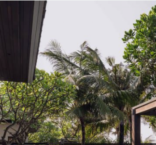
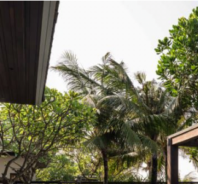

wds · editorialGallery - Accessibility Report
Every supplied photo clears AA with margin to spare — including the greenest, most saturated photo in the set.
This audit verified whether editorialGallery's overlay needed the same frost-opacity adjustment applied to teaserCard. It doesn't have an equivalent frost/blur panel — its overlay is a plain gradient plus brand wash, already aligned to that same design recipe. This audit measured that existing recipe against real renders of all 4 supplied photos, in both default and hover-reveal states, and separately checked for any visible tint effect on green-heavy imagery.
Summary
Measured against real Playwright-rendered screenshots of the component (not synthetic CSS math) — background pixels sampled directly behind each text line, then alpha-blended with the actual text color per the WCAG contrast formula.
Why there's no "0.68" to port over
teaserCard's fix raised a backdrop-filter: blur() scrim's opacity from 0.45 to 0.68 — that value belongs to a frosted-glass disclosure panel. editorialGallery doesn't have one: its card is a plain gradient overlay (brand wash at flat 10% + a black gradient that deepens toward the bottom), with no blur anywhere. That overlay is already aligned to match the wdsCard/teaserCard family recipe — so "align to 0.68" doesn't map onto a real value here. This audit instead verified the recipe editorialGallery already has.
Live component — all 4 supplied photos
Real component markup and CSS, not a mockup. Hover the card to see the reveal state (description + CTA); switch photos below to check contrast and tint by eye across the full set.

Sunlit promenades, private beaches, and the enduring glamour of the Côte d'Azur — rediscovered at your own pace.
ExploreContrast measurements
Sampled from real screenshots: background color captured a few pixels above each text line (same gradient, no glyph contamination), then blended with the text's actual opacity per WCAG's alpha-compositing convention. Bali Coastline is the greenest, lightest photo in the set — it holds the same margin as the rest.
| Photo | State | Text element | Contrast | Result |
|---|
Purple-wash tint check
The overlay's flat 10% brand wash (rgba(33, 21, 81, 0.1)) sits across the entire card, not just the bottom scrim — so it touches bright foliage too, not only the text zone. Sampled a palm-frond patch from Bali Coastline (the greenest photo) with the wash applied, then mathematically reversed it to estimate the same patch without any wash, for a direct comparison.


Compliance verdict
| Area | State | Result |
|---|---|---|
| Title text (all 4 photos) | Default + hover | Pass — 9.5–19.9:1 |
| Details text (all 4 photos) | Default + hover | Pass — 6.2–10.1:1 |
| Description text (all 4 photos) | Hover | Pass — 7.0–9.3:1 |
| "Explore" CTA (all 4 photos) | Hover | Pass — 18.5–19.6:1 |
| Purple brand-wash tint | Static, all zones | Not a WCAG criterion — measured shift is subtle, no visible clash on the greenest sample |
| Frost/blur panel (n/a) | — | Not applicable — component has no frost/blur state to align to teaserCard's 0.68 value |
Dev handoff requirement — not demonstrated in this prototype
This file is a visual/interaction reference, not shippable code — production will be rebuilt in the real component library. But the interaction model itself has a gap that needs to carry forward regardless of what implements it: right now the reveal (description + "Explore") only triggers on mouse hover. There's no keyboard path to it at all.
Content that appears on hover must also appear on keyboard focus, and must be operable without a mouse (WCAG 2.1 SC 1.4.13 and 2.1.1). The production implementation must include:
- Reveal triggers on keyboard focus, same as on hover
- The hidden "Explore" link doesn't sit in the tab order while collapsed, and becomes reachable once revealed
- Expanded/collapsed state is announced to screen readers (e.g.
aria-expandedon a real toggle control)
07 · Methodology Component rendered headlessly (Playwright/Chromium) at production dimensions for all 4 photos currently in the prototype, in both default and hover-revealed states. Background color sampled directly from those renders a few pixels above each text line; text color computed as the real alpha-blend of white at its CSS opacity over that sampled background, then scored with the standard WCAG relative-luminance contrast formula. This is ground-truth pixel data, not an approximated recipe — stronger evidence than a CSS-math estimate. Mobile view is out of scope for this audit.
08 · Sample imagery The 4 photos used in this report are from the design exploration process, not confirmed final production imagery. Because contrast depends on the specific brightness and color of each photo behind the text, this recipe should be re-verified against final photography once selected, particularly for any image notably brighter or more saturated than the samples tested here.